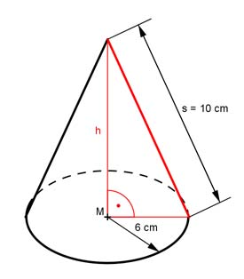

Aufgabe 182 Ein Kegel hat eine Mantellinie s von 10 cm und einen Grundkreisradius r von 6 cm. Wie groß ist sein Volumen V?  Satz von Pythagoras im roten Dreieck: s² = h² + 6² cm² |-6²cm² h² = s² - 6² cm² h² = 10² cm² - 6² cm² h² = 100 cm² - 36 cm² = 64 cm² |√ h = 8 cm л * r² * h V = ------------- 3 л * 6² cm² * 8 cm V = --------------------- = 301,4 cm³ 3